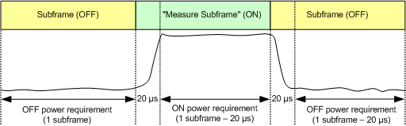
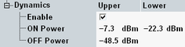
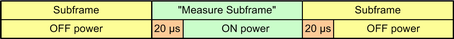
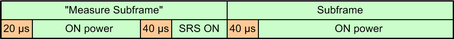
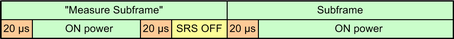

Transmission at excessive uplink power increases interference to other channels. A too low uplink power increases transmission errors. 3GPP defines a general ON/OFF time mask. The mask contains limits for the UL power in subframes not used for transmission (transmit OFF power), subframes used for transmission (transmit ON power) and the power ramping between them.
The ON power is specified as the mean UE output power within a subframe used for transmission, excluding a transient period of 20 µs at the beginning of the subframe. According to 3GPP, subframe number 3 has to be used. For the measurement, the used subframe is selected via the parameter "Measure Subframe", see "Measurement Subframe".
For the OFF power, the mean power has to be measured both in the preceding subframe and in the subsequent subframe. For the subsequent subframe, a transient period of 20 µs at the beginning is excluded.
The following figure provides a summary of the time periods relevant for ON and OFF power limits.

The OFF power must not exceed -48.5 dBm. The ON power limit must be within a range depending on the channel bandwidth. The limits can be set in the configuration dialog.

Characteristics | Refer to 3GPP TS 36.521 V10.3.0, section... | Cell BW | Specified limit |
|---|---|---|---|
ON power | 6.3.4.1 General ON/OFF Time Mask 6.3.4A.1 General ON/OFF Time Mask for CA | 1.4 MHz | ≥ -22.3 dBm, ≤ -7.3 dBm |
3 MHz | ≥ -18.3 dBm, ≤ -3.3 dBm | ||
5 MHz | ≥ -16.1 dBm, ≤ -1.1 dBm | ||
10 MHz | ≥ -13.1 dBm, ≤ 1.9 dBm | ||
15 MHz | ≥ -11.4 dBm, ≤ 3.6 dBm | ||
20 MHz | ≥ -10.1 dBm, ≤ 4.9 dBm | ||
OFF power | 6.3.4.1 General ON/OFF Time Mask 6.3.4A.1 General ON/OFF Time Mask for CA | any | ≤ -48.5 dBm |
- "General ON/OFF" time mask described in detail in the preceding section and defined in 3GPP TS 36.521, section 6.3.4.1 / 6.3.4A.1
Three subframes with the power sequence OFF - ON - OFF are measured. Exclusion periods of 20 µs are used. The limits are evaluated for all ON and OFF powers.
- "PUCCH / PUSCH / SRS" time mask with transmission before and after the SRS, see 3GPP TS 36.101, figure 6.3.4.4-2
Two subframes with ON power are measured. The UE sends an SRS at the end of the first subframe. So the power sequence is ON - SRS ON - ON.
Exclusion periods of 40 µs are used around the SRS. The limits are evaluated for the "ON power", but not for the "SRS ON" power.
- SRS time mask with "SRS blanking", see 3GPP TS 36.101, figure 6.3.4.4-4
Two subframes with ON power are measured. The UE assumes that another UE sends an SRS at the end of the first subframe. It does not transmit at all during this SRS period. So the power sequence is ON - SRS OFF - ON.
Exclusion periods of 20 µs are used around the SRS. The limits are evaluated for all ON and OFF powers, including SRS OFF.
Note that you can shift the borders of all OFF power evaluation periods, see "Add. Excl. OFF Power".